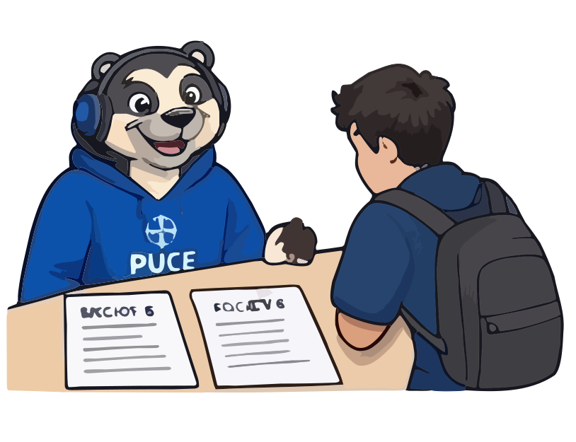

Descubre tu futuro
Encuentra tu vocación universitaria en menos de 10 minutos: responde una evaluación psicométrica ágil, compara tu Top 3 de carreras afines y prueba un micro-reto práctico con materias reales de primer semestre.
⚡ 5 a 10 minutos
🛡️ 100% Gratuito y Anónimo
✓ Sin registros ni contraseñas
🧠 Respaldado por Psicología PUCE

39 Carreras
Evaluadas en 5 macroáreas oficiales de la PUCE
100% Psicología
Banco psicométrico oficial de la PUCE
85% Utilidad
Validado con bachilleres (Colegio Suyana)
0% Fricción
4,3 min y 0 errores JS (Microsoft Clarity)
Orientación vocacional científica
Cómo funciona Orienta PUCE
Un embudo inteligente en 3 fases diseñado por psicólogos educativos e ingenieros para que no elijas tu carrera a ciegas:
-
1
Intereses & Dominio
16 a 24 preguntas psicométricas focalizadas en tus áreas de afinidad real, en menos de 5 minutos.
-
2
Podio Top 3
Compara tus 3 mejores carreras de la PUCE (Oro, Plata, Bronce) con afinidad %, aranceles y mallas oficiales.
-
3
Micro-reto & IA
Resuelve un caso real de primer semestre y aclara dudas de materias con AurelioBot, tu orientador con IA.
Diferencial Único
¿Por qué Orienta PUCE es diferente?
Elegir una carrera no debería ser lanzar una moneda al aire ni aburrirse con cuestionarios interminables.
❌ Tests Web Tradicionales
- ✕ 70 preguntas infinitas y aburridas que no terminas.
- ✕ Entregan solo áreas genéricas ("Te gustan las Ciencias").
- ✕ Mallas curriculares en PDF densos e incomprensibles.
- ✕ Cero práctica: no sabes cómo es una materia de primer año.
- ✕ Sin acompañamiento cuando tienes dudas de costos o dificultad.
✅ Plataforma Orienta PUCE
- ✓ Test ágil y balanceado de 16 a 24 preguntas de Psicología PUCE.
- ✓ Podio Top 3 de carreras exactas con % de compatibilidad real.
- ✓ Mallas interactivas nivel por nivel con aranceles referenciales.
- ✓ Micro-retos formativos de 2 min con casos reales de primer semestre.
- ✓ AurelioBot con IA oficial para responder cualquier duda al instante.
Oferta académica
Área 01
Área 02
Área 03
Área 04
Área 05
Macroáreas vocacionales evaluadas
Salud y Bienestar
Ver en el portal PUCECiencias Exactas, Naturales y Ambientales
Ver en el portal PUCEDerecho, Sociedad y Humanidades
Ver en el portal PUCEEconomía y Gestión Empresarial
Ver en el portal PUCE
Acompañamiento permanente
Aurelio, tu orientador virtual
Inspirado en el oso de anteojos andino y en honor al Padre Aurelio Espinosa Pólit, S.J. Aurelio te acompaña durante el test y responde tus dudas sobre materias, requisitos de ingreso y campo laboral.
¡Da el primer paso hoy!
Descubre tu futuro profesional en 5 minutos
Para hacer el test vocacional, no necesitas crear cuenta ni dejar contraseñas. Es 100% anónimo, gratuito y seguro según la Ley de Protección de Datos Personales.
👉 HAZ CLIC AQUÍ PARA COMENZAR EL TEST VOCACIONAL
Evaluación psicométrica oficial · Podio Top 3 · Micro-retos reales